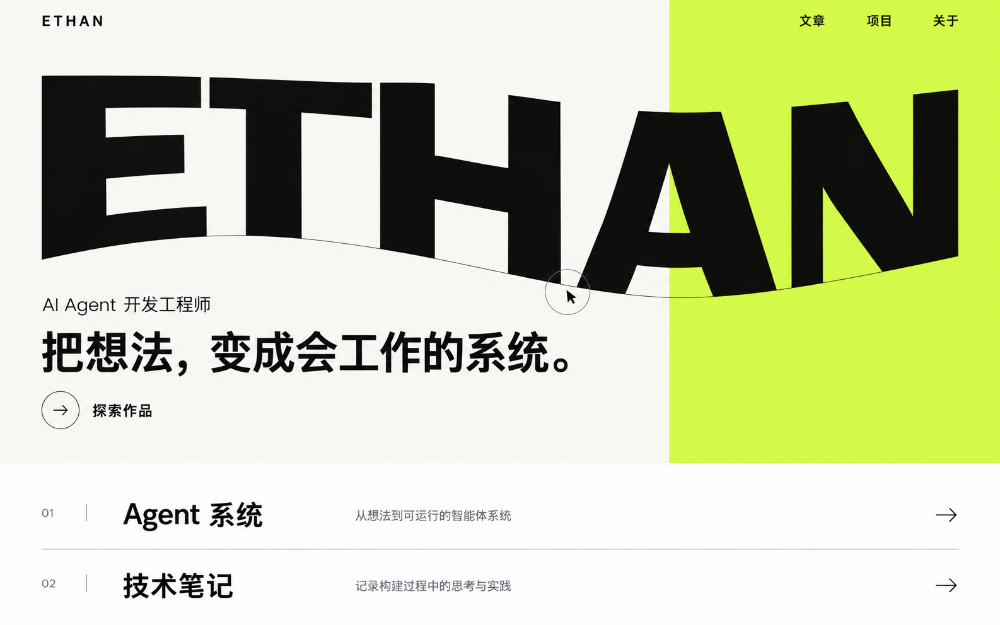
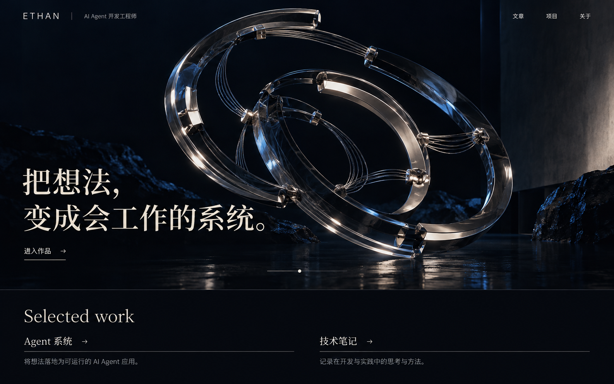
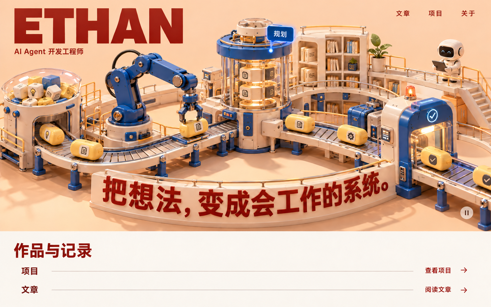

A动态字体实验室

黑白 × 酸柠绿查看原图
字就是主角，页面会回应你。
拟议交互：鼠标推动字形，滚动改变排版，项目悬停出现预览。
取舍：个人标识鲜明、加载负担较轻；Agent 架构表达更抽象。
三套独立方向，保留文章、项目、关于。选定后再定改造计划。

字就是主角，页面会回应你。
拟议交互：鼠标推动字形，滚动改变排版，项目悬停出现预览。
取舍：个人标识鲜明、加载负担较轻；Agent 架构表达更抽象。

进入一个正在思考的空间。
拟议交互：拖动雕塑，随滚动拆解推理、行动、反馈的循环。
取舍：沉浸感和材质表现最强；需要更多渲染与移动端优化工作。

把 Agent 变成可以探索的小世界。
拟议交互：工厂自动运转，悬停看工位，点击聚焦，拖动与滚动探索。
取舍：技术机制直观、亲和力强；需要精细建模与动效保持质感。